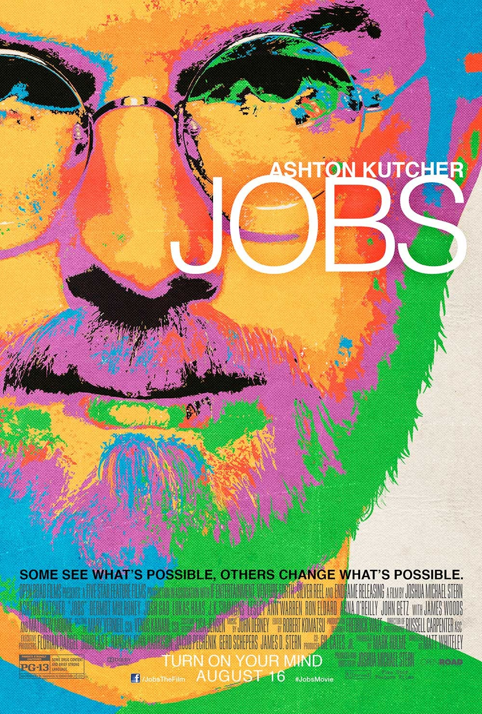
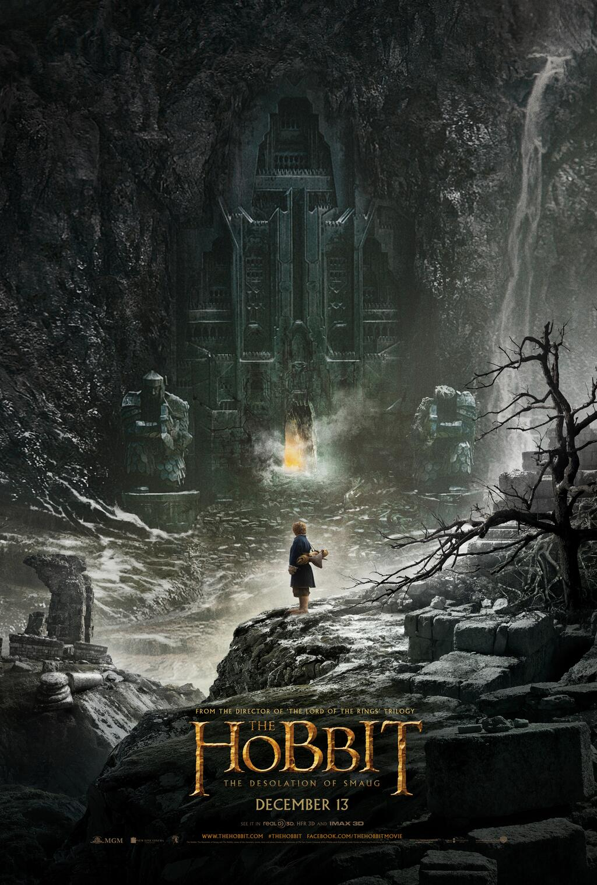

8 November
En visionärs liv...
Det här är den sanna historien om Steve Jobs, visionär och grundare av Apple, och om de banbrytande idéer som gjorde att han gick från att vara en egensinnig hippie till it-världens största legend.
20 November
Jakten för överlevnad fortsätter...
Katniss klarade sig igenom Hungerspelen. Fast framgången och lyckan byts sakta men säkert ut mot en allt mer påträngande fruktan mot huvudstaden. De visar sig att de inte är nöjda med Katniss berömmelse. Och plötslig blottar de sin slutgiltiga fälla.
13 December
Nya äventyr med Bilbo...
Äventyret fortsätter och vi får följa Bilbo Bagger som tillsammans med trollkarlen Gandalf och de tretton dvärgarna, ledda av Thorin Ekensköld tar sig allt närmare det Ödsliga berget.